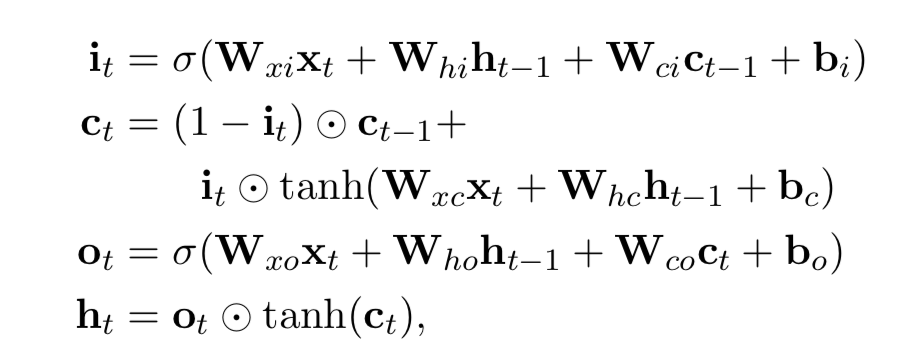
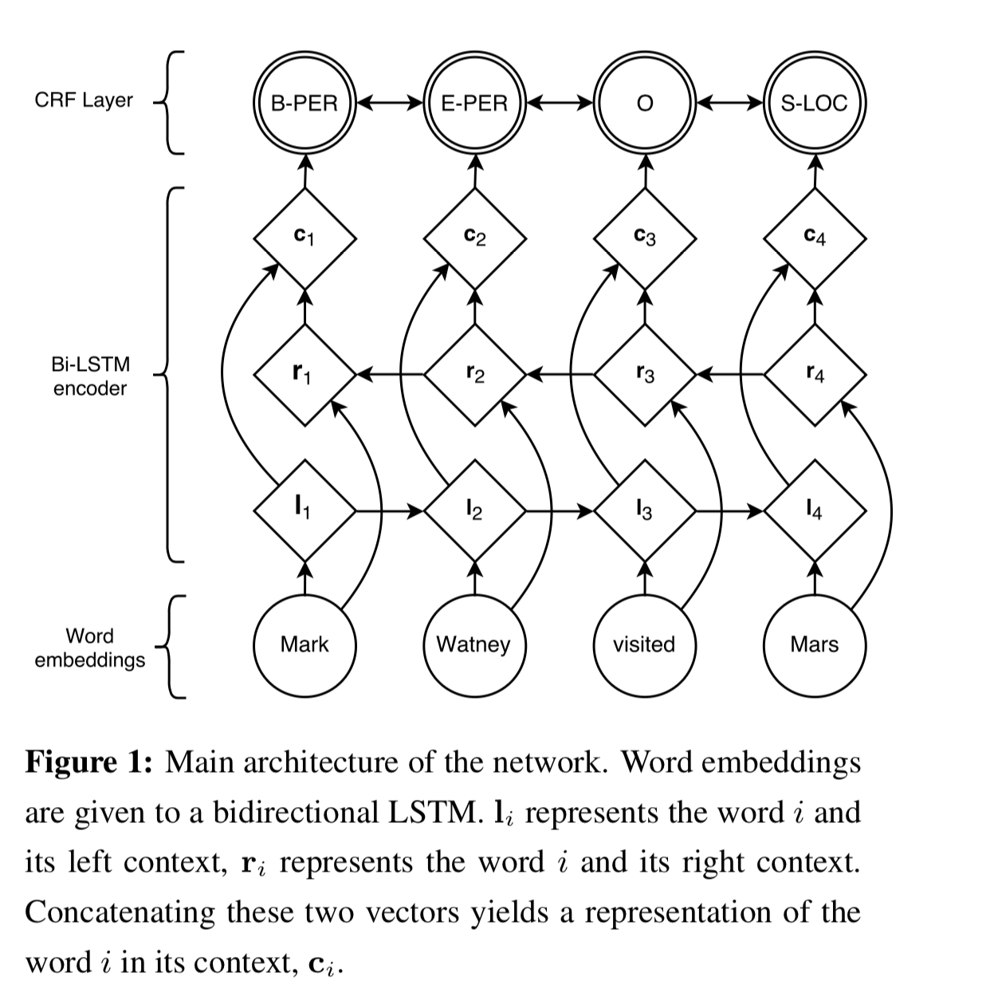
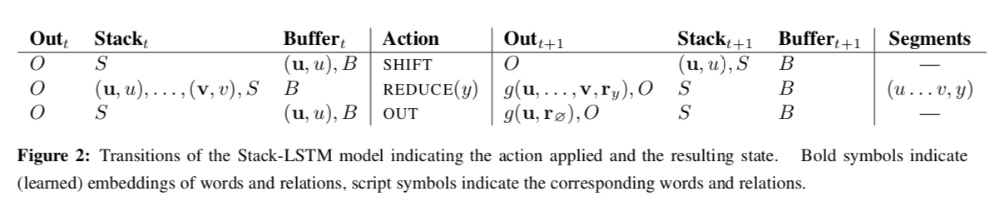
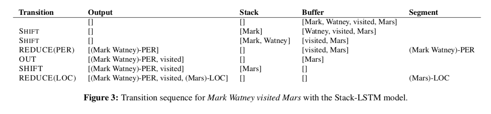
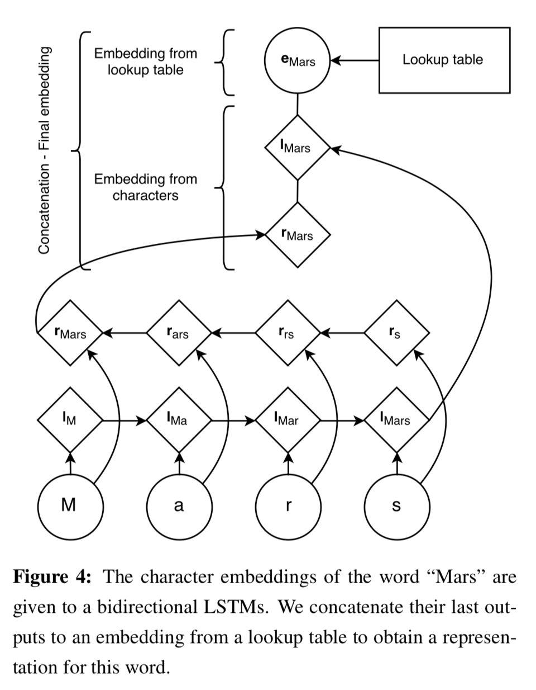
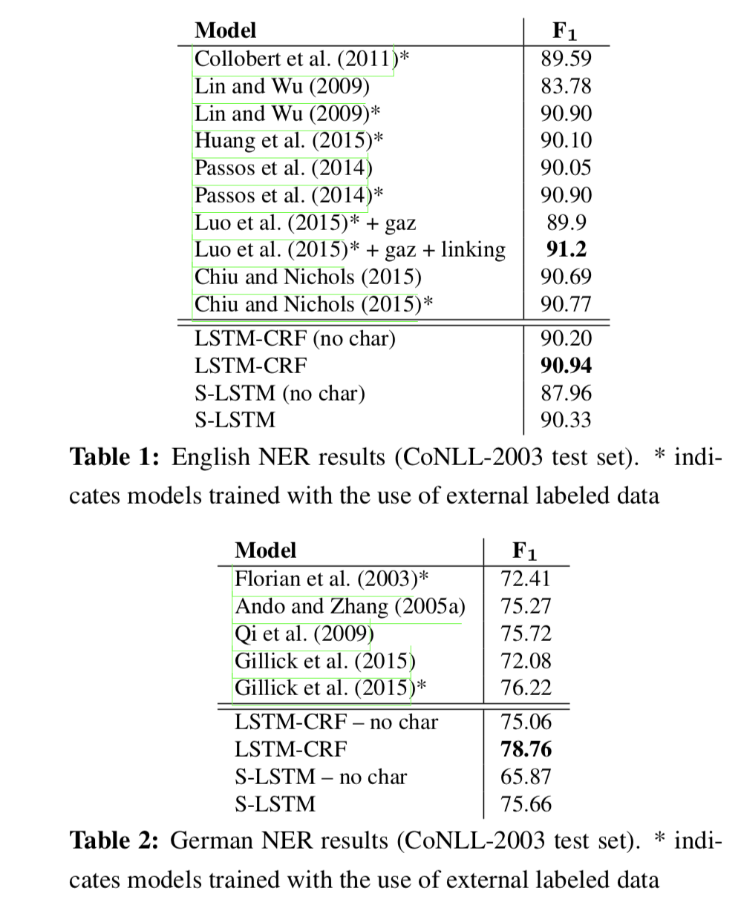
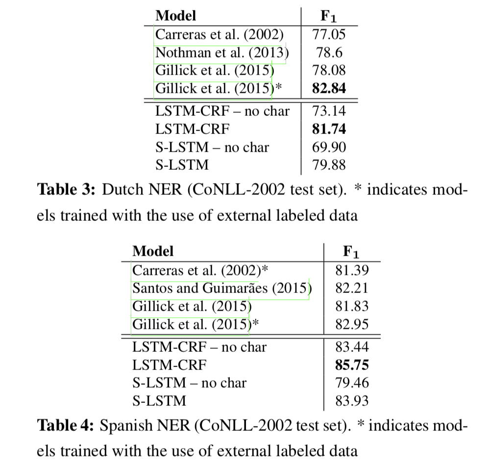
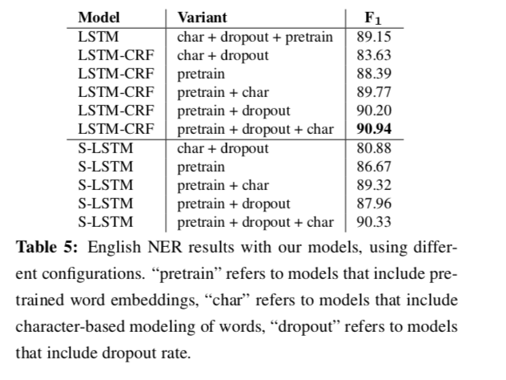

《Neural Architectures for Named Entity Recognition》
摘要
为了从有监督的比较小的训练词典中有效学习，最好的命名实体识别系统（named entity recognition）的实现很大部分依赖于手工标注的特征（features）和领域知识（domain-specific knowledge）。
本论文介绍两个新的网络架构，一个是基于双向lstm和条件岁机场，另一个是受shift-reduce解析器的启发，基于转换的方法进行构建和标注片段。
本文模型依赖于词信息的两个信息源，一个是来源于有监督词典的基于字符的单词表示；另一个是基于无监督的未标注的词表示。
在没有借助任何语言相关的知识和类似地名索引（gazetteers）资源的前提下，我们的模型在四种语言的NER中得到了最好的性能。
1 引言
NER是一个很有挑战性的学习问题。一方面因为在大多数的语言和领域中，可利用的有监督的训练数据特别少。另一方面，可以被命名的单词种类所受限制太少，所以从少量的数据样本中进行泛化很困难。所以为了解决上述问题，一般都是构建正交特征和类似地名索引（gazetteers）语言特定的知识语料。但是在新语言和新领域中开发基于语言特定知识的语料成本很高，这样使NER的挑战性更高。
无监督的未标注词典提供了一种可替代的策略，可以从小的样本数据中获得更好的泛化性能。然而，即使是在大多数都依赖于无监督特征的NER系统中，也是选择在此特征基础上增加手工标注的特征和特定的语言知识语料而不是替换掉无监督特征。
本文提出一种不使用语言特定的语料或特征，基于少量的有监督训练数据和未标注的词典实现一种NER网络架构。
本模型主要用于捕捉两个信息。
（1）第一点因为names总是含有多个token，所以对每个token作出合理的标注决策是很重要的。关于这一点，我们对比了两个模型。
（i）BLSTM+CRF。
（ii）S-LSTN。基于转换方法的构建和标注输入语句。
（2）对于token水平的判断名称的证据有两个，一个是正交（orthographic）证据，另一个是分布式（distributional）证据。
利用基于字向量的单词表示模型（character-based word representa- tion model）捕捉正交敏感特性；将分布式表示方法与其他表示方法结合起来来捕捉分布式敏感特性。
在英语、荷兰语、德语和西班牙语的实验上，表明基于LSTM-CRF的模型性能最好。基于转换的方法transition-based方法在很多语言模型上也超过了已发表的结果，虽然没有超过lstm-crf模型。
2 LSTM-CRF model
简单介绍下LSTM和CRF，以及现在的混合标注架构。
2.1 LSTM
循环神经网络是对序列数据进行操作的一中神经网络。RNN将向量的序列$$(x_{1},x_{2},…x){n})$$作为输入，并得到一个输出序列$$h{1},h_{2},…h_{n}$$,输出序列表示的是关于输入序列在每一时间步的信息。lstm是为了解决RNN长期依赖问题所提出的一种RNN的变体，lstm加入了一个记忆单元能够捕捉到长期的依赖信息。同时加入了门控单元，用于控制输入信息的哪部份将被送入记忆单元，历史信息的哪部份将被遗忘。
下图为门控单元的数学原理。

$$\sigma$$ 是sigmoid函数。
$$(x_{1},x_{2},…x){n})$$代表n个words，每个用d维的向量表示。利用双向lstm计算得出句子中第t个word左侧的信息$$\overrightarrow{h{t}}$$,以及它右侧信息$$\overleftarrow{h_{t}}$$。
此模型将左右侧的输出并接起来得到最终的word representation，$$h_{t} = [\overrightarrow{h_{t}};\overleftarrow{h_{t}}]$$,这样这个word representation有效包含了该词的上下文信息，这一点在很多标注应用很有用处。
2.2 CRF Tagging Models
一个非常简单但是具有很有效的标注模型是将隐藏层的输出 $$h_{t}$$作为特征，对每个输出向量的标注做独立的决策。尽管这种模型在POS标注的简单问题上比较成功，但是当输出标记间存在很强依赖性时，模型的独立分类决策受限。
NER是这样一种任务，因为字符序列间的语法被强加了集中约束，比如I-PER不会在B_LOC之后，所以这种独立假设模型不能应用在NER问题上。
所以，对于NER我们不采用独立标注决策模型，相反。采用条件随机场进行联合建模。
输入语句：1
X = (x_{1},x_{2}, ···x_{n})
假设P为双向LSTM网络的输出概率矩阵，size是$n \times k$,其中k代表标注数量，$P_{i,j}$表示输入语句的第i个单词的标注为第j个tag，预测序列为
1 | Y = (y_{1},y_{2}, ···y_{n}) |
将分数定义为
1 | s(X,Y) = \sum _{i=0}^{n}A_{y_{i},y_{i+1}} + \sum_{i=1}^{n}P_{i,y_{i}} |
其中，A代表转移概率矩阵，$A_{i,j}$代表tag从i转换到j的得分。$y_{0}$和$y_{n}$是认为添加的句子tag的始末。所以A为k+2的方阵。
在所有tag序列中，根据softmax函数得到序列y的tag概率。
1 |
|
在训练过程中，将正确tag的log概率逐渐最大化：
1 |
|
其中 $$ Y_{X}$$代表对于X序列所有可能的tag序列。上述公式表明模型将产生输出label的有效序列。在解码过程中，通过$$y^{*} = argmax {\hat{y} \in {Y{X}}} s(X,\hat{y})$$预测输出序列含有最高得分score。
2.3 Parameterization and Training
每个token的标注决策得分是由上下文的词（word-in-context）经过Blstm计算得出embedding值，然后embedding相互点乘得到这些得分再与bigram的兼容性得分相组合。
网络架构图如下，圆圈代表观察变量，双圆圈代表随机变量，菱形代表上一次层的决策函数。

模型参数包括：bigram兼容性得分矩阵A，Blstm概率矩阵，线性的特征权重以及wordembeddings。在2.2章节，假设$x_{i}$句子中单词的word embedding，$y_{i}$为该词相关联的tag。在section 4 将会继续讨论如何对word embedding进行建模。2.1章节也已经讲述了embedding输入到Blstm，网络输出该词左右的上下文表示（ a representation of the left and right context）。
将得到的上下文表示concatenate成向量$c_{i}$,然后将其部署在一个layer上大小与单个的tag大小相同。这一层不使用softmax输出，而是用CRF来选择输出每个单词tag的最后预测结果。另外，在$c_{i}$与CRF层之间添加一个隐藏层，能使性能大幅提高。
2.4 Tagging Schemes
使用IOBES，Inside，Outside，Beginning，End，Singel。
3 Transition-Based Chunking Model
序列型lstm是将序列从左到右进行建模，而栈式lstm允许对stack对象进行embedding，并可以从embedding中增加（push）或者移除（pop），使得stack-LSTM能够像stack一样工作，只包含上下文的主要的embedding。
3.1 Chunking Algorithm
设计如下的过度库存（transition inventory ）。使用两个stack，分别是特定的输出和stack的表示，一个缓存buffer存储要被处理的单词。transition inventory 包含以下的transition，SHIFT是将word从buffer到stack，REDUCE（y）从stack的top将所有的items全都pop出去，创建一个chunk，并将这些items标记为y,最后将这些标记好的chunk reprentation push到output stack的top。当REDUCE成立时，OUT将word直接从buffer移动到output stack，
当buffer和stack都为空时，算法结束。


此模型的参数化是在给定当前stack、buffer、output的内容，以及历史action的前提下，对每一时间步的action定义一个概率分布。对上述的每一个通过stack lstm计算得出固定维度的embedding，然后通过并接embedding得到全部的算法状态。这种representation是用于在每个时间步对所有可能的操作定义一个分布。这个模型的目的是在给定输入序列的前提下，最大化该序列的参考操作（从标记的训练词典中提取得到）的条件概率。
采用贪婪算法得到最后的最大概率操作，对于长度为n的序列，所有操作的次数为2n次。
3.2 Representing Labeled Chunks
当REDUCE（y）操作被执行时，算法将把一个序列的tokens（包括token的向量embedding）作为一个单独的chunk，从stack移动到output buffer。通过双向lstm计算序列的embedding，Blstm建立在embedding之上，输入数据包括组成这个embedding的所有tokens和代表该chunk类型的token（比如，y）。
4 Input Word Embeddings
本文两个模型的输入都是单独单词的向量表示。从有限的NER训练数据中得到词类型的单独表示是很困难的，因为有太多的参数要评估。因为很多语言都能利用正字法或者形态法证明它是一个name，所以每个词的表示对于它们的拼写（spelling）很是敏感。所以，运用一个模型，通过构成这个单词的每个字符的表示来构建这个单词的表示。
另一个想法是，在大型语料词典中，命名可能会出现各种个样的变化。针对这种情况，从对词序敏感的大型语料词典中学习得到embedding。为了避免模型过于依赖某一个表示（representation），加上一层dropout，事实证明dropout对于得到好的泛化性能至关重要。
4.1 Character-based models of words
本论文最大的特点是，在训练中学习字粒度特征，而不是手工建立单词前缀和后缀信息的特征工程。
学习字粒度的embedding有利于学习特定任务或者特定领域中的表示（representation）。研究表明，这一做法在以下几个方面有利：（1）形态丰富的语言，（2）解决PO
S中的词性标注和语言模型中超出词典（out-of-vocabulary）问题或者依赖解析。

上图为由单词的字符生成单词embedding的过程。
过程如下：
（1）字符查找表是随机初始化的，包含了每个字符的embedding。通过一个双向lstm将word中的每个character相关联起来，正向lstm得到character embedding的正向序列，反向lstm得到反向序列。
（2）从双向lstm得到正向和反向的character embedding序列，拼接起来得到一个word embedding，这个embedding是字粒度（character-level）。
（3）最后将（2）中字粒度的word embedding与词粒度的embedding拼接起来得到最后的embedding。词粒度的embedding是通过查找word lookup-tabel得到。
在测试中，将look-up table中没有embedding的单词映射为UNK，将50%的单个字也映射为UNK。双向lstm的正反向都是25维度，所以字粒度的embedding维度是50.
4.2 Pretrained embeddings
实验表明，使用预训练的embedding效果要优于随机初始化的embedding。采用skip-n-gram的方法预训练embedding，是一种word2vec的变体。然后这些预训练的embedding在训练过程中不断调整。
embedding的维度为：英语100维，荷兰，德语，西班牙语为64。单词的最小频率为4，窗口大小为8。
4.3 Dropout training
初始实验表明，当与词粒度的embedding并接后，字粒度的embedding并没有对性能发生改变。为了使模型能够充分利用这两种表示，加入了dropout层。在最后的embedding后，在输入到lstm模型前加dropout层。
dropout给模型性能带来了很大改进。
5 Experiments
5.1 Training
两个模型都是使用反向传播算法更新参数。
尝试使用SGD，学习率设为0.01，梯度剪枝设为5.有很多SGD的改进算法，比如Adadelta和Adam。运用这些改进算法可以加快收敛，但是性能都没有不加剪枝操作的好。
lstm-crf模型只使用一层双向lstm，维度为100。改变维度并没有对性能有改进。dropout层dropout rate设为0.5，增大会使性能变差，变小会使运行时间变长。
stack-lstm 使用两层lstm，维度都是100。每个构成方法的action的维度都是16，输出的embedding维度是20。
5.2 Data Sets
验证模型对于不用语言的泛化能力，应用了数据集 CoNLL-2002 和 CoNLL- 2003 datasets。除了对英语中的数字全部替换为0以外，没有对数据做任何预处理。
5.3 Results
state-the-art


5.4 Network architectures
探究了CRF，character-level representation，pretraining embedding，dropout对于模型性能的影响，pretrainning embedding的正向影响最大。具体影响为下：

6 Related Work
CoNLL-2002 : Carreras 利用几个合适深度决策树的组合得到best one；
CoNLL-2003 : Florian 利用四个不同的分类器的组合得到best one
2009 ：Qi利用神经网络，在大量未标注语料词典中运用无监督学习得到best one
之后的神经网络模型有：
CNN+CRF
LSTM+CRF+hand-crafted spelling feature
线性链式CRF+L2正则+短语聚类特征
线性链式CRF+spelling特征和地名索引
7 Conclusion
关键点：
（1）其他模型是对输出标记的依赖性进行建模，而不是应用简单的CRF或者transition-bsed算法去构建和标记成块的输入。
（2）应用pre-trained word embedding，以及character-based word embedding，更好的捕捉到了形态和正交的信息。
（3）dropout